未確定事項と判断してほしい点
ここに挙げた 6 点だけが判断の要る点です。ほかの節は決定済みの情報です。各項目から本文の該当箇所へ移れます（本文には同じ番号の「要判断 n」の印があります）。
- 1同じ記事の既存動画との関係：この記事は
20261008_メンテナンスされない（できない）モノは、いずれ負債になる/で一度動画になっている（約 154 秒・制作済み）。今回は「架空のアプリ画面が雑草と錆に侵食される」1 つの舞台で全編を通す別の版として企画した。差し替え（作り直し）として扱うか、別の版として並べるか。→ この動画で伝える一文 - 2尺：既定は約 2:19（ナレーション 594 字から算出）。2 分を超えるため、短縮案は (A) 12「買い切りで、生涯保証？」を外して約 2:06、(B) A に加えて 06 を 07 に統合して約 2:00。どれにするか。→ 構成と尺
- 3ナレーションの有無：声ありの前提で、声と文字の分担を組んでいる。声なしにする場合は画面の文字を増やして組み直し、尺も変わる。→ 声・文字・素材の役割分担
- 4結論の言い方：原稿の結びは「〜一番の近道ではないでしょうか」という問いの形。動画では本人の言い切り「一番の近道だと、私は思います」（画面は「私は思う。」）に変えた。この言い方でよいか。→ カット 14
- 5形のあるモノ（土地・自転車・車・家）の質感：既定は全編作画。写真やストックの早回し動画にする場合は、04・11・14 のすべてで同じ質感にそろえる（一部だけ変えない）。窓（ソフト）は全編作画のまま。→ 差し替え候補
- 6
この動画で伝える一文 要判断 1
「何もしなければ、今のまま保てる」と思っている人に、手入れされないモノは形があってもなくても止まらずに劣化し、いずれ負債になると伝え、「メンテナンスに正当な対価を払うことが、自分の生活と資産を守る一番の近道だ」という本人の結論を残す。
主張・根拠・留保の役割：主張は「何もしないことは現状維持ではなく、劣化へのカウントダウン」（03）。根拠は、形のあるモノ（04）、ソフトの見えない腐食（05–07）、担い手がいなくなったツール（09）、買い物の維持費（11）、買い切りの取引（12）。留保は「ソフトは錆が見えないから錯覚しやすい」（06）、「自分で作ること自体は素晴らしい挑戦」（08）、「提供側だけが消耗する取引は続かない」という条件つきの言い方（12）。最後は本人の言い切り（14）で閉じ、視聴者への問いかけや一般論に置き換えない。
絵の骨組み：全編を、明るい机の上の架空のアプリ画面（以下「窓」）1 枚を舞台にして通す。01 で整っていた窓が、02 の早回しで雑草（外から伸びる変化）と錆（内側の腐食）に覆われ、14 では定期的に落ちるコイン（対価）と青い手入れの一筆で、修繕跡を残したまま使える状態を保つ。冒頭の「「何もしない」は、現状維持？」と最後の「手入れに、正当な対価を。」の文言だけで、同じ主張が伝わる。
既存の 20261008 版（畑・歯車・天秤・循環図）とは舞台と絵柄を分けた。過去版の構図や部品は流用していない。
視聴者
対象：自分や身近な組織で道具・仕組み・ソフトを作ったり買ったりする人。「AI で自分たちで作れるなら保守費は要らない」「一度作れば（買えば）しばらくは大丈夫」と感じている人。PTA や理事会などで便利ツールを導入する立場の人も含む。
持ち帰ってほしいこと：①何もしないことは現状維持ではない ②ソフトは見えないだけで、中で腐食が進む ③作るなら、誰かの助けで回せる形にする ④手入れには手間とお金がかかり、その対価は自分の道具を守る保険でもある。
構成と尺 要判断 2
| カット | 区分 | 時間 | 尺 | 声の字数 | この区間で分かってほしいこと | 見出し |
|---|---|---|---|---|---|---|
| 01 | 問い | 0:00–0:06 | 6秒 | 23 | 「何もしない＝現状維持」という思い込みを、問いとして出す | 「何もしない」は、現状維持？ |
| 02 | 主張 | 0:06–0:14 | 8秒 | 20 | 手入れをやめると、止まらずに劣化が進む（絵で一瞬で分かる） | 手入れを、やめると。 |
| 03 | 主張 | 0:14–0:21 | 7秒 | 29 | 主張：何もしないことは劣化へのカウントダウン | 劣化への、カウントダウン。 |
| 04 | 形のあるモノ | 0:21–0:30 | 9秒 | 43 | 形のあるモノは、どれも同じ構造で劣化する | 身の回りでも、同じこと。 |
| 05 | ソフトウェア | 0:30–0:38 | 8秒 | 34 | ソフトウェアも同じ構造に入る | ソフトウェアも、放置された山。 |
| 06 | ソフトウェア | 0:38–0:46 | 8秒 | 35 | ソフトは劣化が見えないので、錯覚しやすい（留保） | 錆も、埃も、見えない。 |
| 07 | ソフトウェア | 0:46–0:57 | 11秒 | 50 | 見えないところで腐食が進み、負債になる | 見えないところで、腐食が進む。 |
| 08 | 作る・担い手 | 0:57–1:10 | 13秒 | 62 | 作ることは肯定する。ただし作ったあとの手入れが要る（留保） | 作るのは、素晴らしい挑戦。 |
| 09 | 作る・担い手 | 1:10–1:20 | 10秒 | 46 | 担い手がいなくなると、良かれと思ったツールも負債になる | 「これ、誰が作ったの？」 |
| 10 | 作る・担い手 | 1:20–1:28 | 8秒 | 32 | 解決の像：誰かの助けで回せる、標準化された仕組み | 誰かの助けで、回せる仕組みに。 |
| 11 | 買い物と対価 | 1:28–1:38 | 10秒 | 48 | どんなモノも、買った瞬間から維持費がかかる | 買った瞬間から、サブスク。 |
| 12 | 買い物と対価 | 1:38–1:51 | 13秒 | 64 | 提供側だけが消耗する取引は続かず、困るのは利用者（条件つき） | 買い切りで、生涯保証？ |
| 13 | 買い物と対価 | 1:51–2:01 | 10秒 | 44 | 維持費は、自分の道具を守る保険でもある | 維持費は、自分の道具を守る保険。 |
| 14 | 本人の結論 | 2:01–2:14 | 13秒 | 64 | 本人の結論：手入れに正当な対価を払うことが近道 | 手入れに、正当な対価を。 |
| 15 | 制作表示 | 2:14–2:19 | 5秒 | 0 | 制作表示 | エンドロゴ |
尺の算出：各カットのナレーション案の字数（句読点・かぎ括弧・中黒を除く）÷ 5.5 字/秒 ＋ 息継ぎ 1 秒を切り上げ。5.5 字/秒は、同じ記事の 20261008 版で実測した読み上げの速さ（777 字・141 秒）。絵を見せる時間が要るカットは下限を置いた（02 の早回し 8 秒、10 の組み直し 8 秒、13 の手入れ 10 秒）。ナレーション合計 594 字 ÷ 5.5 ≒ 108 秒 → 本編 134 秒＋エンドロゴ 5 秒＝約 2:19。秒数は目安で、等速での読了・観察時間は制作側の試作で確かめる。
要判断 2短縮案 (A) 12（13 秒）を外す → 約 2:06。11 の「サブスク」から 13 の「保険」へ直接つなぐ。主張・留保は欠けない（12 は根拠の 1 つ）。(B) A に加えて 06（8 秒）を 07 に統合し、07 の冒頭を「ソフトは錆も埃も見えない。けれど…」とする → 約 2:00。留保（見えないから錯覚する）は 07 の声に残す。3 分には伸ばさない。
カット表・絵コンテ
各カットに「はじめ」「おわり」の 2 コマと間の動きを書いています。コマ画は構図のラフ（1280×720、明るい紙色）で、完成画ではありません。秒数・位置・大きさは参考値で、実装の手順とパラメータは制作側の裁量です（画面全体を大きく動かすこと、可読性、留保は緩めない）。カメラの名前は カメラワークと切り替えの名前、動きの用語は 動きの言語、記号の意味は 記号と色 を参照。章表示・テロップ帯・エンドクレジットは入れない。
「何もしない」は、現状維持？
0:00–0:06 / 約6秒 ・ 問い ・ 問い（思い込みを出す）

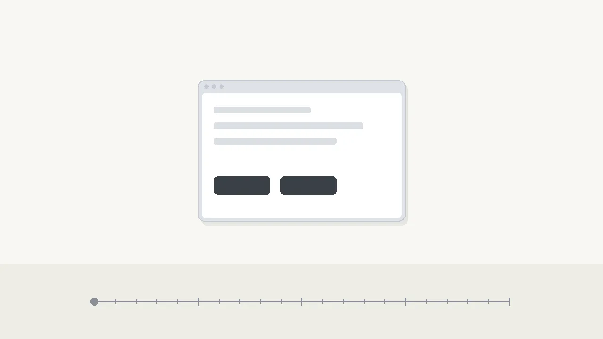

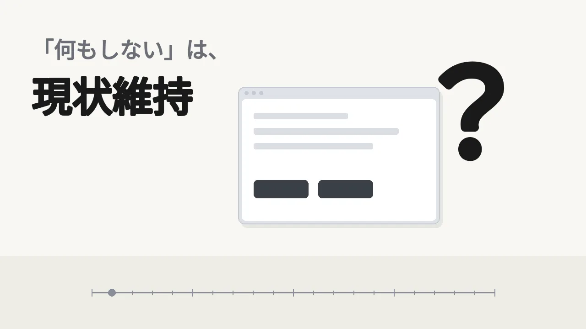
「何もしない」は、
現状維持？
何もしなければ、今のままでいられる。本当でしょうか。
声 23字 ／ 画面 10字
「現状維持？」の「？」だけを墨の特大で置き、窓よりも大きく見せる。疑問符の大きさで、続きを見る理由（本当に保てるのか）を立てる。
はじめ：窓が中央、余白は均等（整った状態の象徴）。おわり：文字は左上の横組み2行、「？」は窓の右上の角に重なる特大。重心は中央→左上へ。
- 0〜2秒：窓が奥から手前へ滑り込み、机に置かれて止まる（Dolly in で寄りながら）。
- 2〜5秒：問いの2行が行マスクで左から入る。「？」だけ遅れて落ち、窓の角に掛かって止まる。
- 5〜6秒：時間の目盛りの点が動き出し、カメラは止めずにゆっくり窓の縁へ寄る（02 の侵食が始まる場所へ視線を渡す）。
Dolly in（ゆっくり）
寄った窓の縁を、そのまま 02 の始まりの画にする（切らずにつなぐ）。
- 実写（任意）：白い机の天板の写真を背景に敷き、窓を合成する（人物・実在の画面なし）。
- 図形のみ：机は紙色の面と影だけで描く（既定）。
手入れを、やめると。要判断 6
0:06–0:14 / 約8秒 ・ 主張 ・ 見せ場：時間の早回し（侵食）

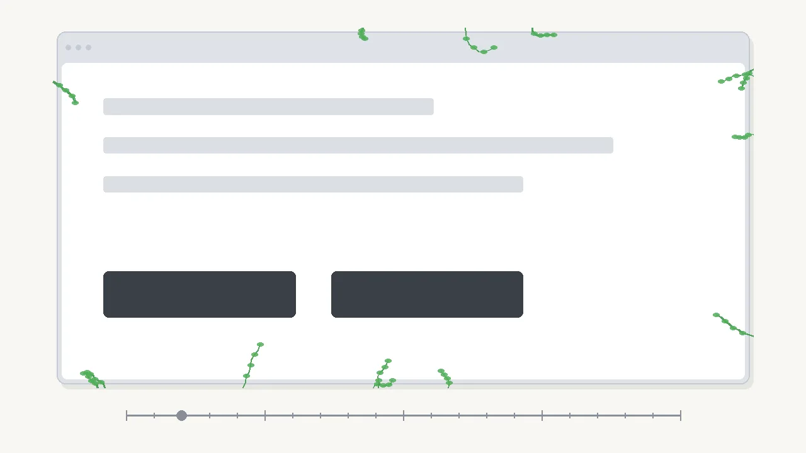

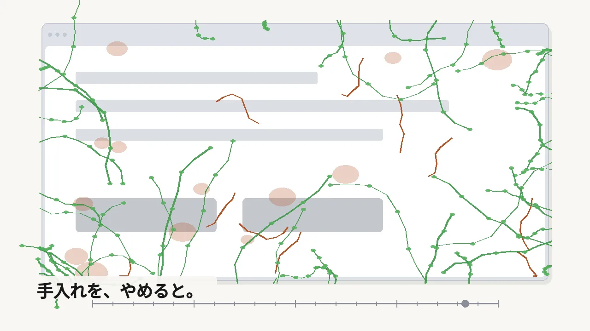
手入れを、やめると。
手入れをやめても、草木は止まらずに育ちます。
声 20字 ／ 画面 8字
文字は「手入れを、やめると。」1行だけを小さめに置き、主役を絵（侵食）に譲る。言葉は短く、見る時間を取る。
はじめ：窓が画面いっぱい（寄り）。おわり：窓は同じ大きさのまま、雑草と錆で輪郭が崩れて見える。文字は左下に1行、小さめ。
- 0〜1秒：時間の目盛りの点が加速（Time-lapse の開始）。
- 1〜7秒：Time-lapse（約6秒・速い）。雑草は窓の外の縁から内側へ、錆のひびはボタンの角から外側へ、向きを逆にして同時に広がる。ボタンが1つずつ薄い灰に変わる。
- 7〜9秒：カメラは窓の周りを Orbit（Arc shot）で約20°回り込み、絡んだ雑草の厚みを見せる。最後のフレームで止めず、03 の Smash cut へ。
Time-lapse ＋ Orbit（Arc shot・小さく）
侵食しきった瞬間に Smash cut（0.3秒）で 03 の白い紙面へ。
- AI生成映像（未承認・生成しない）：明るい机の上の架空のアプリ窓が雑草と錆に覆われる早回し 6 秒（プロンプト案は「素材」の節）。
- 図形のみ（既定）：雑草はフレームから決まる枝分かれの線、錆は広がるマスクで描く。
劣化への、カウントダウン。
0:14–0:21 / 約7秒 ・ 主張 ・ 主張（早めに言い切る）

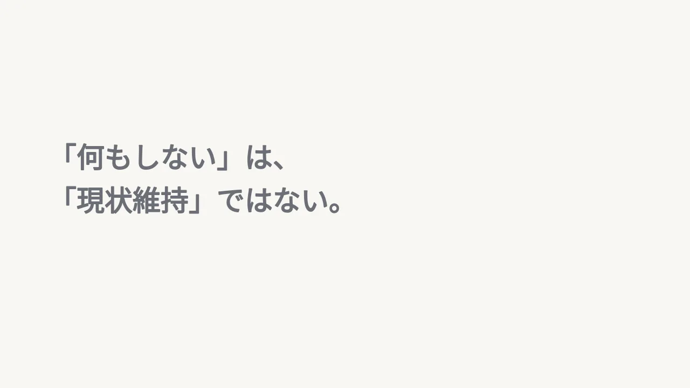

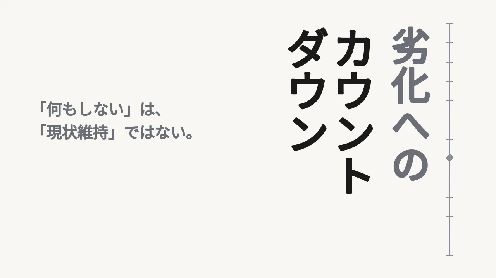
「何もしない」は、
「現状維持」ではない。
劣化への
カウントダウン
何もしないことは、現状維持ではない。劣化へのカウントダウンです。
声 29字 ／ 画面 25字
「カウントダウン」を縦組みで画面の高さいっぱいに置く。横組みの前置きとの向きの違いで、言い切りの強さを出す。
はじめ：左に横組み2行（重心は左）。おわり：右に縦組みの特大（重心は右）。窓は出さない（主張だけの画）。
- 0〜0.3秒：Smash cut。02 の侵食した画から、何もない紙面へ。
- 0.3〜3秒：前置きの2行が左で行マスクから入る。
- 3〜6秒：縦組みの「劣化への／カウントダウン」が上から叩き込まれ、画面全体が一度だけ下へ沈んで戻る。
- 6〜8秒：時間の目盛りが横から縦へ90° 回転 し、文字の横で刻み続ける。カメラはTracking shot で右へ流れながら 04 のカードの列へ渡す。
Smash cut → Tracking shot（右へ）
縦の時間の目盛りを横へ倒し直し、04 のカードの下に敷く線にする。
- 図形のみ（既定）：文字と時間の目盛りだけ。
- 効果（任意）：叩き込みの瞬間だけ文字の層を小さく揺らす（字形は崩さない）。
身の回りでも、同じこと。要判断 5
0:21–0:30 / 約9秒 ・ 形のあるモノ ・ 根拠：形のあるモノ（土地・自転車・車）

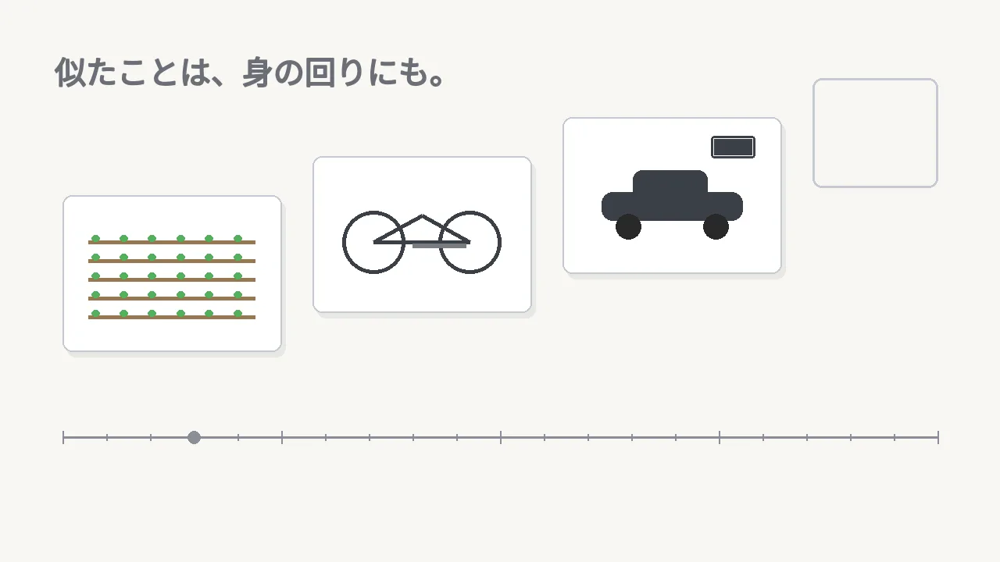

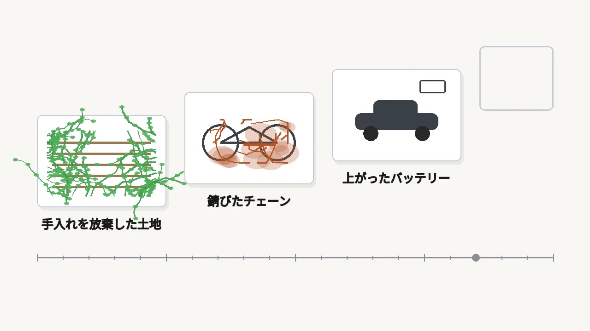
手入れを放棄した土地
錆びたチェーン
上がったバッテリー
手入れを放棄した土地は荒れ、乗らない自転車はチェーンが錆び、放置した車はバッテリーが上がる。
声 43字 ／ 画面 26字
主役の語はラベル3つ。同じ大きさ・同じ位置関係で並べ、「同じ構造」を字組みの反復で見せる。
はじめ：カードは右上がりの斜めの列（重心は中央右）。おわり：同じ列のまま、各カードの下にラベル。上部に余白。
- 0〜2秒：カードが右から1枚ずつ差し込まれ、斜めの列に並ぶ（Tracking shot（右へ）の続き）。
- 2〜8秒：時間の目盛りの点が進むと、3枚に同時に劣化が広がる。土地は雑草、チェーンは錆、車は電池の目盛りが減って灰へ。
- 8〜10秒：列全体を Tilt で少し起こし、右の空いた場所へ視線を送る（05 の5枚目が入る場所）。
Tracking shot（右へ）→ Tilt（小さく起こす）
列の右端に空いた1枠へ、05 で窓が入る。
- 実写の質感（任意・要判断）：土地・チェーン・車の3枚を、ストックの写真または早回し動画にする。04・11・14 の「形のあるモノ」すべてで同じ質感にそろえる。
- AI生成映像（未承認・生成しない）：草が伸びる畑、錆びていく自転車のチェーンの早回し各 4 秒。
ソフトウェアも、放置された山。
0:30–0:38 / 約8秒 ・ ソフトウェア ・ 根拠：ソフトも同じ構造

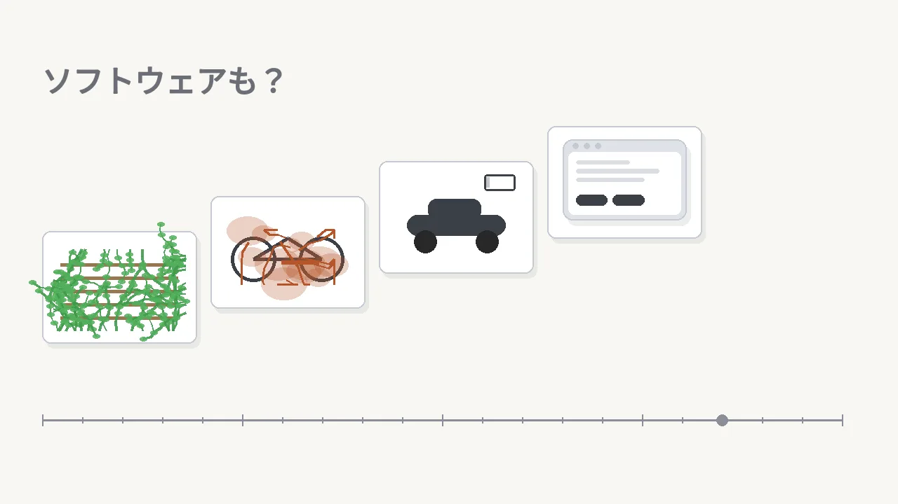

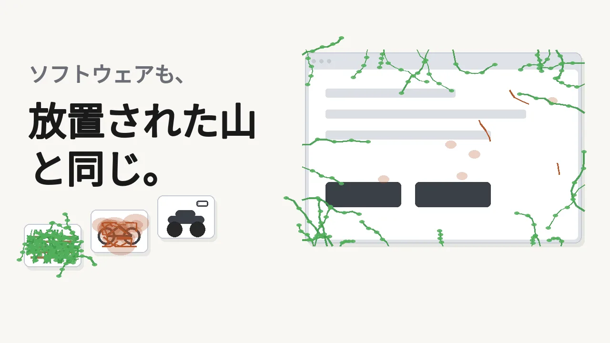
ソフトウェアも、
放置された山と同じ。
ソフトウェアも同じです。作ったきりのソフトは、放置された山と変わりません。
声 34字 ／ 画面 16字
「放置された山」を墨の太字で大きく、「ソフトウェアも、」は灰の小さめ。物の列から窓へ主役が移る。
はじめ：カードの列の中の1枠（小）。おわり：窓は右半分、文字は左の2行（重心は右→左右に分かれる）。
- 0〜2秒：空き枠へ窓が落ちて収まる（他のカードと同じ大きさ）。
- 2〜6秒：窓だけが Dolly in で手前へ出て拡大、ほかのカードは左奥へ流れて小さくなる（奥行きの速度差）。
- 6〜8秒：窓の縁に雑草が伸びる（02 と同じ描き方）。文字の塊は窓と逆向き（左へ）にゆっくり流れる。
Dolly in（窓だけ）
窓の縁の雑草が、06 で窓の表面から一度消える（見えない、への転換）。
- 図形のみ（既定）：窓は 01 と同じ作画。
- 実写（不採用寄り）：実在のアプリ画面は使えないため、窓は全編作画で通す。
錆も、埃も、見えない。
0:38–0:46 / 約8秒 ・ ソフトウェア ・ 留保：見えないから錯覚する

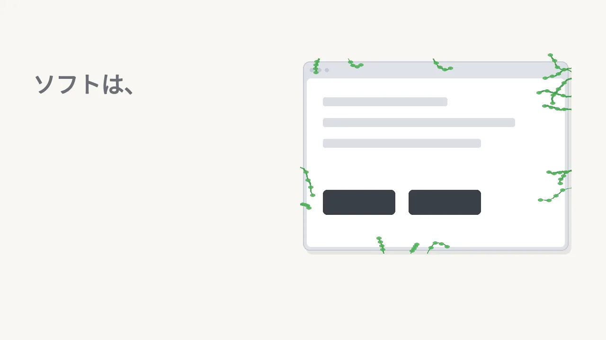

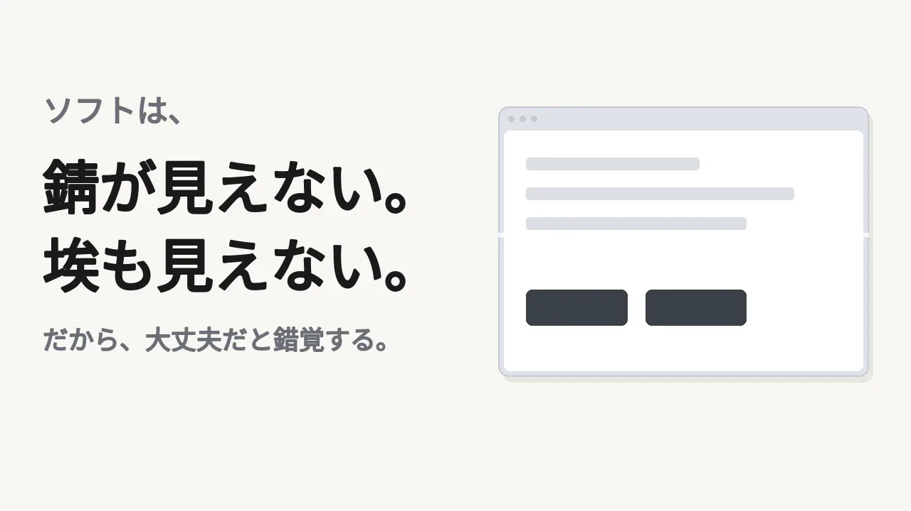
ソフトは、
錆が見えない。
埃も見えない。
だから、大丈夫だと錯覚する。
ただ、ソフトには錆も埃も見えない。だから、放置しても大丈夫だと錯覚しがちです。
声 35字 ／ 画面 28字
「錆が見えない。」「埃も見えない。」を同じ大きさで左揃えに2段で積む。整った字組み自体が「大丈夫そう」の見た目を作る。
はじめ：窓が右、文字は左に小さく。おわり：左に大きな2段の文字（重心は左）。窓は右で静かに光る。
- 0〜2秒：窓の雑草が表面から退き、新品の見た目に戻る（戻るのは見た目だけ）。
- 2〜6秒：2行が行マスクで交互に入る（1行目は左から、2行目は右から）。カメラは窓の正面で Pan（左へ）、文字の塊へ寄る。
- 6〜9秒：灰の「錯覚する」が入る瞬間、窓の表面にだけ細い光の線が横切る（表面の下に何かある、の予告）。
Pan（左へ・小さく）
光の線の位置から窓の表面がめくれ、07 の断面（Crane で降りる）へ。
- 図形のみ（既定）。
- 効果（任意）：表面を横切る光の線は、文字には掛けない。
見えないところで、腐食が進む。
0:46–0:57 / 約11秒 ・ ソフトウェア ・ 根拠：ソフトの中の腐食

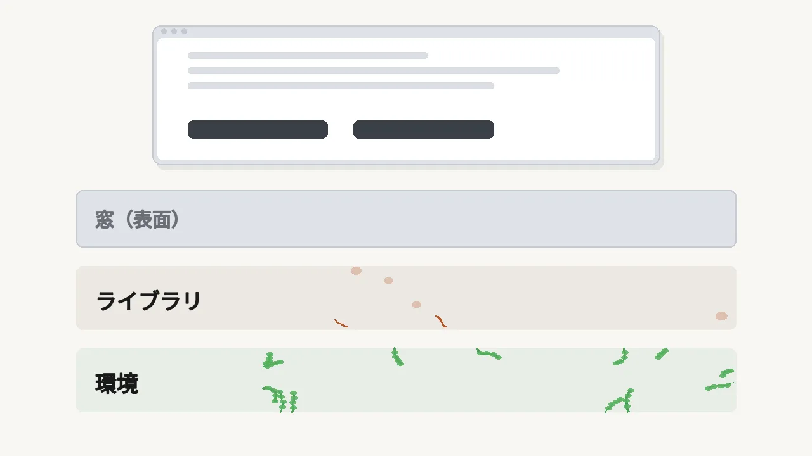

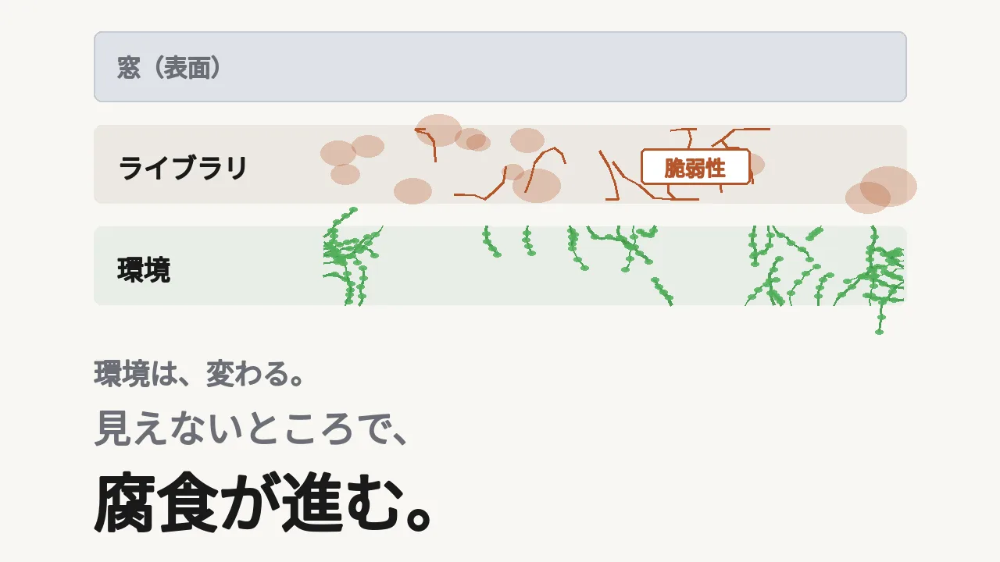
環境は、変わる。
ライブラリ
脆弱性
見えないところで、
腐食が進む。
けれど環境は変わり、ライブラリは古くなり、脆弱性も見つかる。見えないところで腐食は進み、負債になっていきます。
声 50字 ／ 画面 27字
「腐食が進む。」を錆色ではなく墨の特大で置き、錆の広がる層の上に被らない下段に置く（色は絵が受け持つ）。
はじめ：窓の表面が上部に残り、層が下へ続く断面（重心は上）。おわり：層が画面を横に埋め、文字は下段の左寄せ2行（重心は下）。
- 0〜3秒：Crane（降りる）。窓の表面から層の中へ降りる。
- 3〜8秒：環境の層は左から右へ流れ続け（変わり続ける）、ライブラリの層には錆が点から面へ広がる。「脆弱性」の小札が錆の中に1つ浮かぶ。
- 8〜11秒：下段の2行が入る。読む間も層の流れは止めない。最後にカメラが Crane up で表面まで戻る。
Crane（降りる）→ Crane up（戻る）
表面へ戻ったところで、窓の横から人の手（ピクト）が入り 08 へ。
- 3D（任意）：層を three.js の薄い板にして、断面を斜めから見せる。
- 図形のみ（既定）：平面の帯3本で層を描く。
作るのは、素晴らしい挑戦。
0:57–1:10 / 約13秒 ・ 作る・担い手 ・ 留保：作ること自体は肯定する

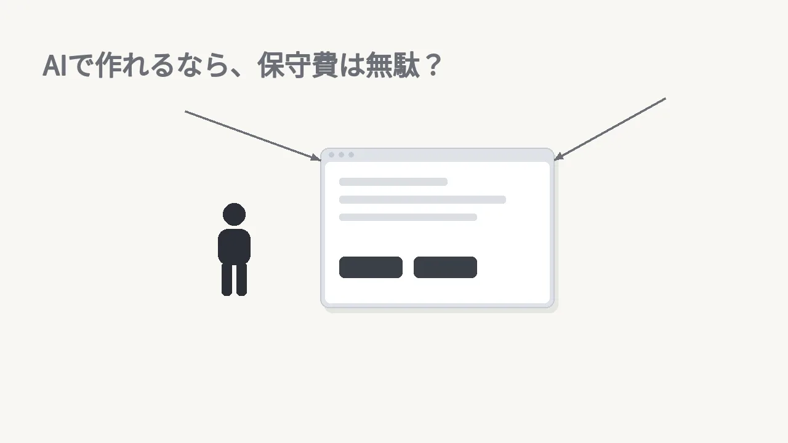

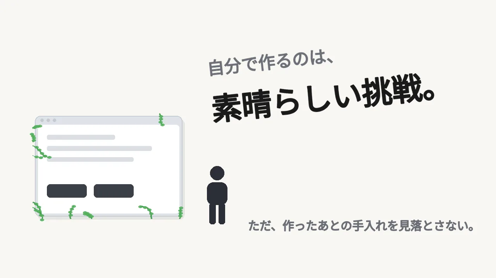
AIで作れるなら、保守費は無駄？
自分で作るのは、
素晴らしい挑戦。
ただ、作ったあとの手入れを
見落とさない。
AIで作れるなら保守費は無駄、という声もあります。自分で作るのは、素晴らしい挑戦です。ただ、作ったあとの手入れを見落としてはいけません。
声 62字 ／ 画面 46字
「素晴らしい挑戦。」を傾けた特大で置き、作ることを肯定する。留保の「ただ、」以下は灰で小さく、否定に見せない。
はじめ：ピクトと窓が中央、文字は上に1行。おわり：文字が右上がりに傾いた特大2行（重心は右上）、留保は左下に小さく。
- 0〜3秒：ピクトの手元で窓の部品が組み上がる（部品が飛んできて収まる）。
- 3〜8秒：「素晴らしい挑戦。」が -6° 傾いて叩き込まれ、画面全体が同じ角度へ少し傾ける（Dutch angle）。
- 8〜12秒：傾きを戻しながら、灰の留保の1行が下から入る。窓の縁に、ごく小さく雑草の芽が1本見える（時間はまた進む）。
Dutch angle（-6° → 0°）
小さな芽を手がかりに、09 で時間を進め、作った人が去る。
- ピクトグラムアニメ（既定）：顔なしの人型。
- 実写（任意）：手元だけが部品を組む写真（顔なし・ストック）。
「これ、誰が作ったの？」
1:10–1:20 / 約10秒 ・ 作る・担い手 ・ 根拠：担い手がいないと負債になる

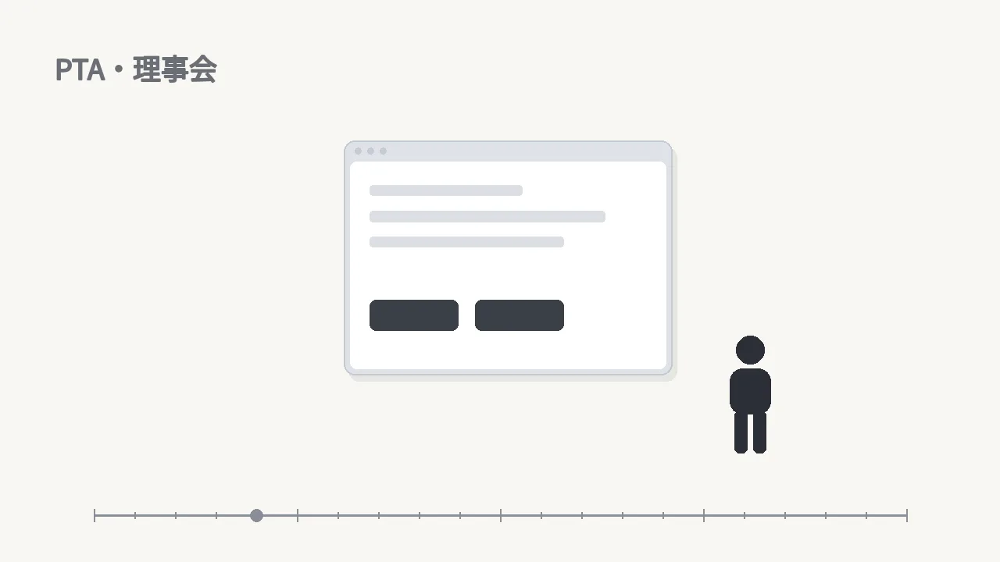

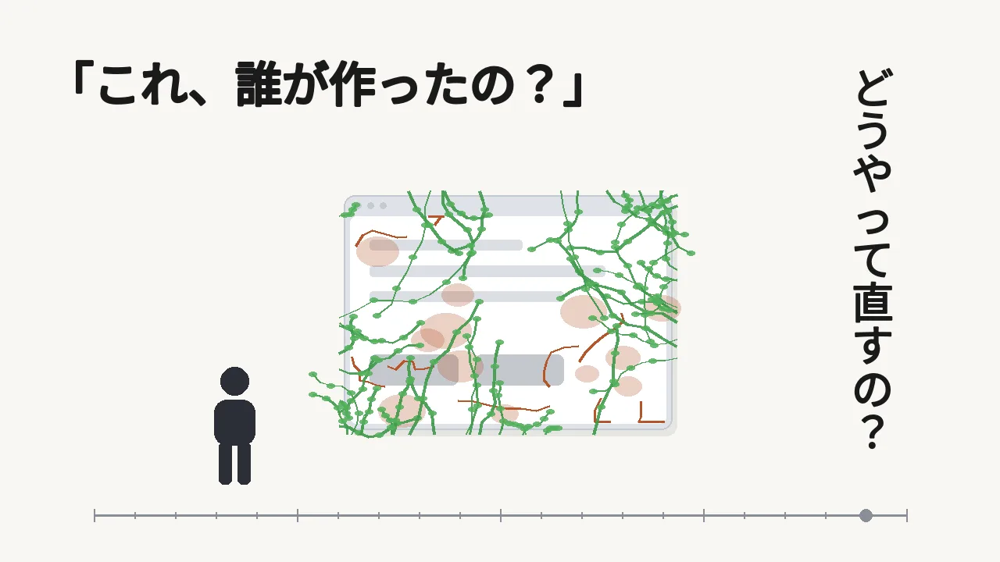
PTA・理事会
「これ、誰が作ったの？」
「どうやって直すの？」
PTAや理事会でも、良かれと思って作ったツールが、役員の交代で誰にも直せなくなり、後任の負債になる。
声 46字 ／ 画面 22字
2つの問いを、向きと大きさを変えて交差させる（1つは横組み、1つは縦組み）。混乱を字組みで見せる。
はじめ：左上に小さい場所の札、窓は中央。おわり：問いが画面の左上と右側で交差（重心が分散）。後任は左下。
- 0〜3秒：作った人が去る。去る動きと同時に時間の目盛りの点が一気に進む（1年の交代の早回し）。
- 3〜6秒：後任が入るころ、窓は侵食しきっている（02 と同じ描き方を短く）。
- 6〜11秒：問いの2つが逆方向から飛び込み、交差して止まる。カメラは後任の背中側へ Orbit（Arc shot）で回り込む。
Time-lapse（短く）＋ Orbit（Arc shot）
交差した問いが外へ散り、10 で窓が標準の部品に組み直される。
- ピクトグラムアニメ（既定）：作った人と後任は同じ形・別の立ち位置で区別する（色で区別しない）。
- 実写（不採用）：実在のコミュニティの画面や人物は出さない。
誰かの助けで、回せる仕組みに。
1:20–1:28 / 約8秒 ・ 作る・担い手 ・ 解決の像：標準化

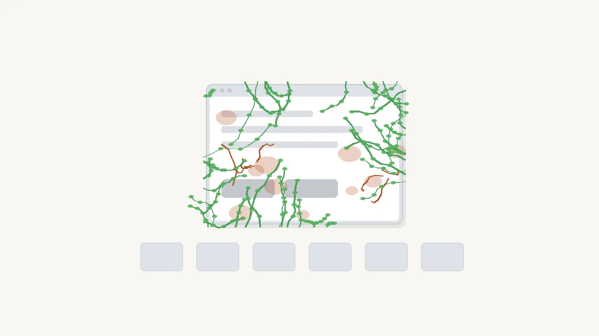

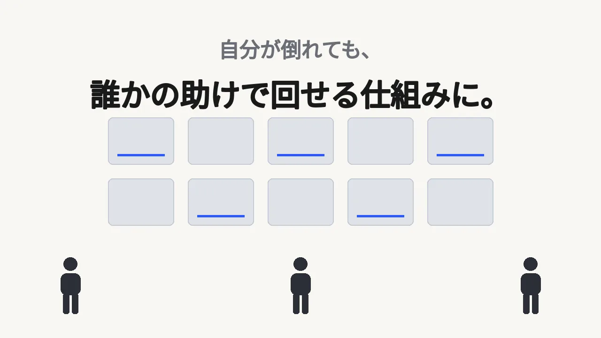
自分が倒れても、
誰かの助けで回せる仕組みに。
必要なのは、自分が倒れても、誰かの助けで回せる、標準化された仕組みです。
声 32字 ／ 画面 20字
「誰かの助けで回せる」を中央の横組みで大きく。左右対称の格子と字組みで「誰でも扱える」を見せる。
はじめ：中央の窓（崩れた形）。おわり：俯瞰の格子、文字は上下で挟む対称の組み（重心は中央）。
- 0〜3秒：窓がパネルに分解され、雑草と錆がはがれ落ちる。
- 3〜7秒：パネルが同じ間隔の格子へ整列（Crane up で俯瞰へ）。
- 7〜10秒：3人のピクトが入れ替わり立ち替わりパネルに触れ、触れた所に青い手入れの印が付く。
Crane up（俯瞰へ）
格子のパネルの1枚が家の形に変わり、11 の買い物へ。
- ピクトグラムアニメ（既定）。
- 図形のみ：人を出さず、手入れの青い印が格子を順に巡るだけにする。
買った瞬間から、サブスク。要判断 5
1:28–1:38 / 約10秒 ・ 買い物と対価 ・ 根拠：維持費のかからないモノはない

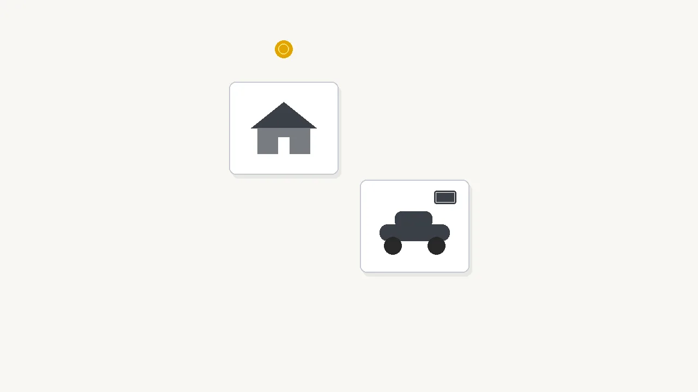

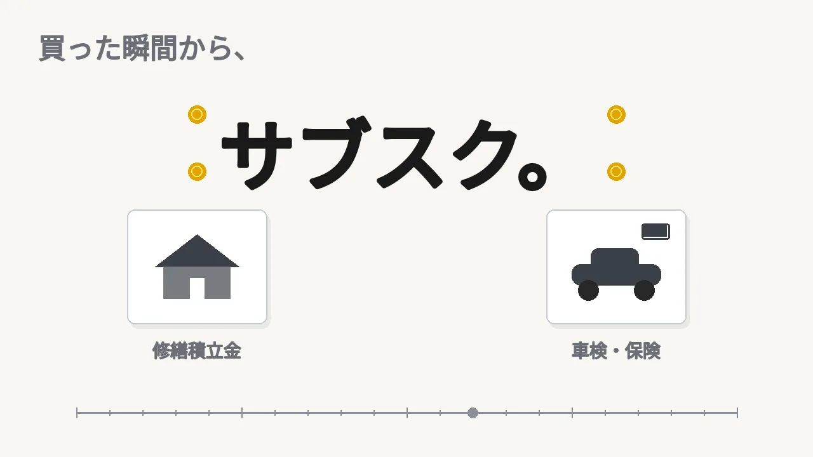
買った瞬間から、
サブスク。
修繕積立金
車検・保険
家には修繕積立金、車には車検や保険。どんなモノも、買った瞬間から、維持費のかかるサブスクのようなものです。
声 48字 ／ 画面 20字
「サブスク。」を画面の横幅いっぱいの特大で置き、落ちるコインがその字の隙間を抜ける。言葉と記号（定期の支払い）が同じ拍で動く。
はじめ：カード2枚が中央に縦並び。おわり：特大の横組み1語が画面を横断（重心は中央の横帯）、ラベルはカードの下。
- 0〜3秒：家と車のカードが上下から入る。
- 3〜8秒：コインが拍ごとに落ちる（時間の目盛りと同期）。「買った瞬間から、」が先に入り、「サブスク。」が横から突き抜けて止まる。
- 8〜11秒：カメラが引き（Dolly in の逆）、コインの落ちる列が2本に増える（家と車の両方）。
引き（Dolly in の逆）
コインの列の1本が止まり、12 の「買い切り」の札に変わる。
- 実写の質感（任意・要判断）：家と車は 04 と同じ質感（写真）にそろえる。
- 図形のみ（既定）。
買い切りで、生涯保証？
1:38–1:51 / 約13秒 ・ 買い物と対価 ・ 根拠と留保：提供側だけが消耗する取引

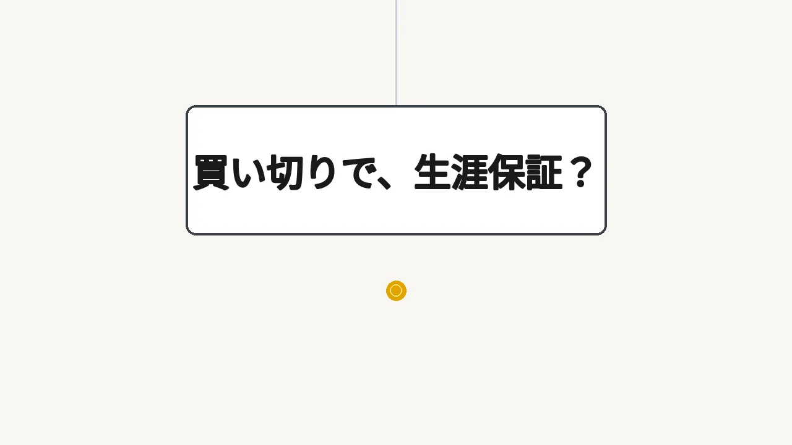

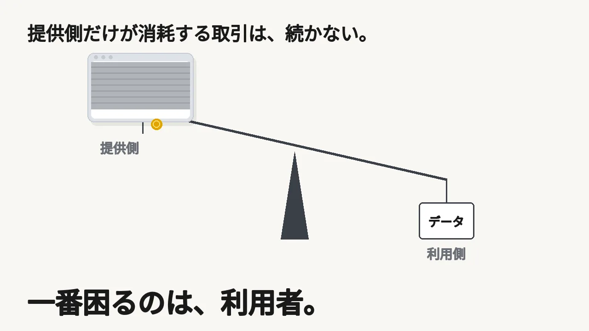
買い切りで、生涯保証？
提供側だけが消耗する取引は、続かない。
一番困るのは、利用者。
だから私は、買い切りで生涯保証、という言葉に不安を覚えます。提供側だけが消耗する取引は続かない。サービスが終われば、一番困るのは利用者です。
声 64字 ／ 画面 35字
「生涯保証？」は札の上の字、「続かない。」は天秤の支点の真上に置き、条件（提供側だけが消耗する取引）と一緒に読ませる。
はじめ：札が中央上（重心は上）。おわり：天秤が対角線上に傾き、文字は支点の上と画面下に分かれる（重心は対角）。
- 0〜3秒：札が上から振り子のように降りて止まる。
- 3〜9秒：札が天秤に変わり、提供側の皿からコインが1枚ずつ抜けていく。天秤は傾き続ける。
- 9〜13秒：提供側の窓にシャッターが降りる（灰）。利用側のデータの箱にカメラが Dolly in。
Dolly in
取り残された箱の上に、13 でコインが落ちる。
- 図形のみ（既定）。
- 留保の扱い：買い切りのサービスすべてが終わる、とは見せない（提供側だけが消耗する条件を画面に残す）。
維持費は、自分の道具を守る保険。
1:51–2:01 / 約10秒 ・ 買い物と対価 ・ 根拠：対価は保険でもある

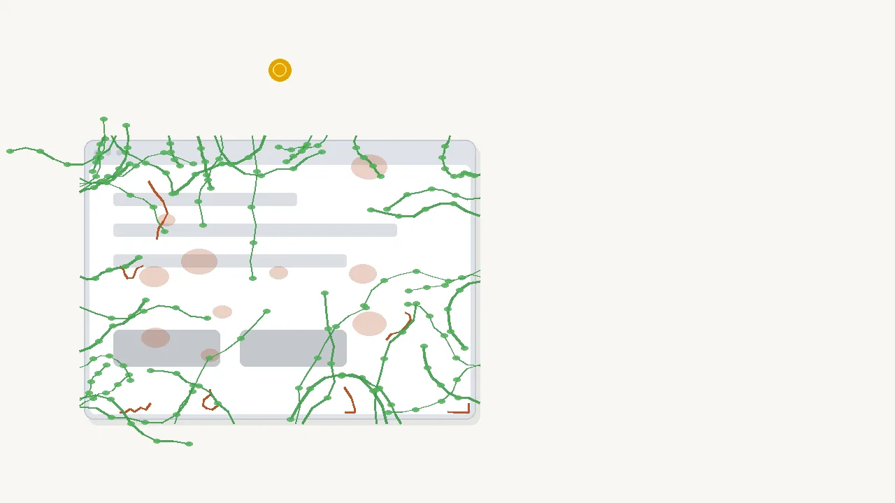

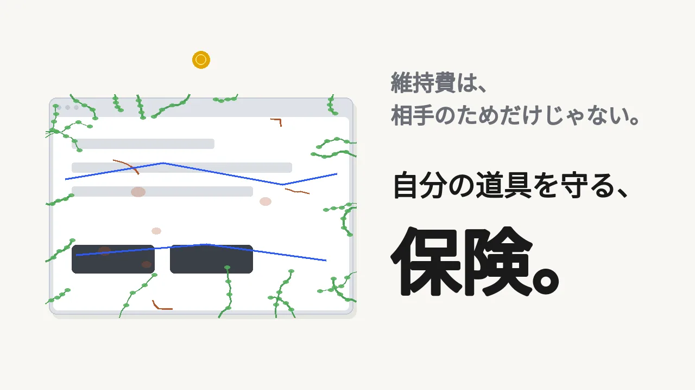
維持費は、
相手のためだけじゃない。
自分の道具を守る、
保険。
維持費は、相手を儲けさせるためだけのものではない。自分の道具を長く保つための、保険でもあります。
声 44字 ／ 画面 25字
「保険。」を短く大きく、修繕跡の青い線の真横に置く。言葉と手入れの跡を隣り合わせにする。
はじめ：窓が左寄り、上の空からコイン（重心は左上）。おわり：窓は左、文字は右の縦に積んだ3段（重心は右）。
- 0〜3秒：コインが窓に落ち、波紋の代わりに青い一筆が窓を横切る。
- 3〜9秒：拍ごとにコインと一筆が続き、窓が少しずつ使える状態に戻る。ボタンの灰が濃灰に戻る。
- 9〜12秒：カメラが引き（Dolly in の逆）、14 の全体の格子へ引きの準備。
引き（Dolly in の逆）
引いたカメラが、14 で全部のモノを並べた俯瞰になる。
- 図形のみ（既定）：修繕跡は青い細線。金継ぎのような金色は使わない（黄はコイン＝対価に限る）。
- 効果（任意）：一筆の線はフレームで決まる描画（線が描かれていく図の仕組み）。
手入れに、正当な対価を。要判断 4要判断 5
2:01–2:14 / 約13秒 ・ 本人の結論 ・ 本人の結論

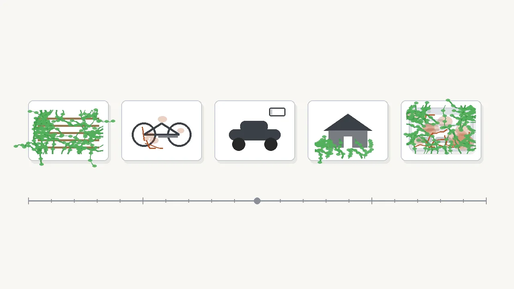

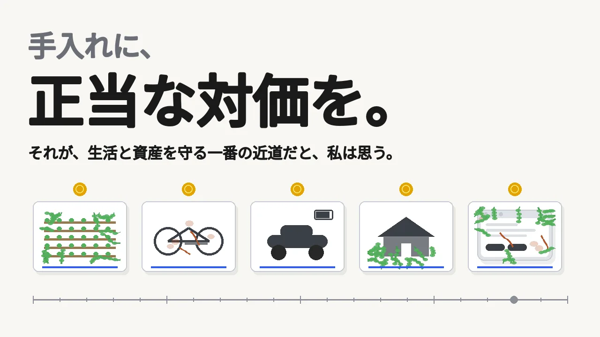
手入れに、
正当な対価を。
それが、生活と資産を守る
一番の近道だと、私は思う。
手入れを怠れば、土地も道具もソフトウェアも荒れ果てる。メンテナンスに正当な対価を払うことが、生活と資産を守る一番の近道だと、私は思います。
声 64字 ／ 画面 32字
「正当な対価を。」を全編でいちばん大きく、左揃えの2行で置く。最後の1行は墨の通常の大きさで、言い切りの形で閉じる。
はじめ：俯瞰の格子（重心は全面）。おわり：格子は下半分で流れ、上半分に特大の左揃え2行（重心は左上）。
- 0〜4秒：Crane up で俯瞰へ。各モノの下を時間の目盛りが流れ、手入れされない列は侵食が進む。
- 4〜9秒：コインの列が全部のモノへ広がり、青い一筆が順に走る。侵食は止まり、修繕跡が残る。
- 9〜13秒：特大の2行が入る。読む間、格子は左へ流れ続け、時間の目盛りは止めない（時間は進み、手入れも続く）。
- 13〜14秒：最後の1行のあと、画面全体を右へ Whip pan してエンドロゴへ。
Crane up → Whip pan
Whip pan でライムの全面へ。
- 実写の質感（任意・要判断）：土地・自転車・車・家のカードは 04・11 と同じ質感にそろえる。窓だけは作画。
- 図形のみ（既定）。
エンドロゴ
2:14–2:19 / 約5秒 ・ 制作表示 ・ 制作表示

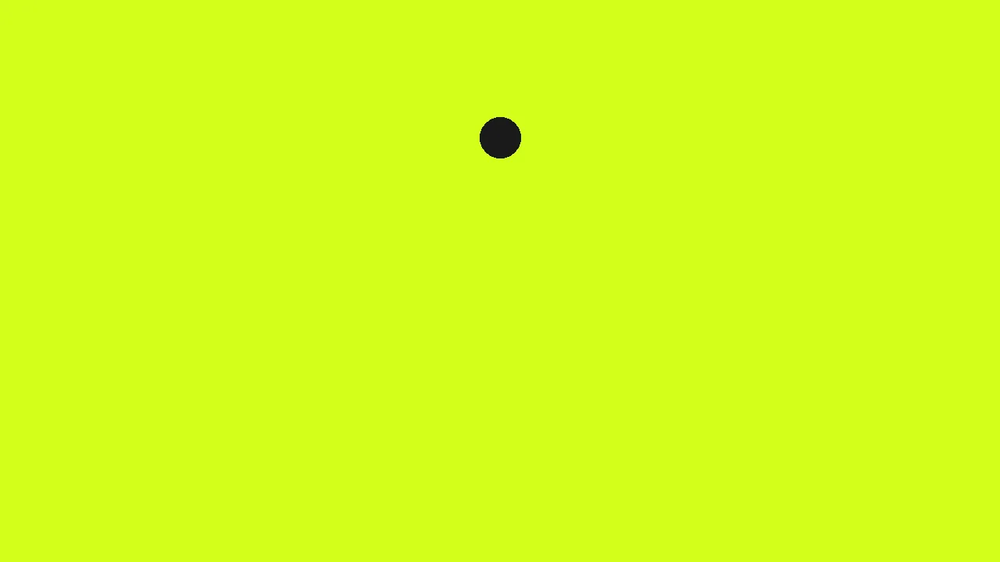

なし（ロゴのみ）
なし
声 0字 ／ 画面 0字
ロゴ以外を置かない。
ライムの全面にロゴだけ。引き伸ばさず中央、安全域内。
- 0〜2.6秒：o が落ちてバウンドし定位置へ。
- 2.6〜3.2秒：全体が左へスライド。
- 3.0〜4.0秒：「.work」が一文字ずつ出る。完成状態を約1〜1.5秒保持して終わる（ロゴの動きは okady-work-logo.svg の CSS アニメーションのとおり）。
固定
—
- 差し替えなし（規定の表示）。
詳細（ここから下は補足）
ここまでで、どんな動画で、どう組み、どう見えるかを示した。以下は制作に必要な分担・デザインシステム・動きの言語・記号・素材・音・根拠・完成条件。
声・文字・素材の役割分担 要判断 3
| 担い手 | 受け持つこと | 受け持たないこと |
|---|---|---|
| 声（ナレーション案） | 例と理由をつなぐ文。土地・自転車・車の例、ソフトの腐食の中身（環境・ライブラリ・脆弱性）、PTA・理事会の経緯、維持費の例、買い切りの取引の条件。「なぜそうなるのか」を文で運ぶ。 | 画面の語の読み上げだけの繰り返し。全文字幕は付けない。 |
| 文字（キネティックタイポグラフィ） | 問い・主張・決め語・留保の短い語。「現状維持？」「劣化へのカウントダウン」「錆が見えない。」「腐食が進む。」「素晴らしい挑戦。」「誰かの助けで回せる仕組みに。」「サブスク。」「保険。」「正当な対価を。」。画面の文字は約 340 字で、声（594 字）の6割以下。 | 経緯の説明文、例の列挙の全文、原稿にない数字。 |
| 図形（窓・雑草・錆・コイン・ピクト） | 時間とともに劣化が溜まる様子（雑草と錆の早回し）、手入れの効き目（青い一筆と修繕跡）、対価が定期であること（拍ごとに落ちるコイン）。three.js の層で奥行きとカメラを付ける。 | 説明のための飾り。意味のない粒子・火花・速度線。 |
| 写真・動画（任意） | 既定は使わない。使う場合は「形のあるモノ」（土地・自転車・車・家）の実物の手触りだけを受け持ち、04・11・14 で同じ質感にそろえる（要判断 5）。 | 実在の人物・実在のアプリ画面・他社のロゴ。本人の記録映像と誤認させる素材。 |
ナレーションは入れる前提で組んでいる。役割の検討は音声生成の許可ではない（AGENTS.md「APIによるナレーション生成」）。声なしにする場合は、例と理由を画面の文字へ移す必要があり、文量と尺が増える。
主張・根拠・留保の対応
| 役割 | 内容（動画での言い方） | カット | references.md |
|---|---|---|---|
| 問い | 何もしなければ、今のままでいられるのか | 01 | R1 |
| 主張 | 何もしないことは現状維持ではなく、劣化へのカウントダウン | 02・03 | R2・R3 |
| 根拠 | 手入れを放棄した土地は荒れ、自転車のチェーンは錆び、車のバッテリーは上がる | 04 | R4 |
| 根拠 | 作ったきりのソフトは放置された山と同じ。環境は変わり、ライブラリは古くなり、脆弱性が見つかる | 05・07 | R5・R7 |
| 留保 | ソフトは錆も埃も見えないので、放置しても大丈夫だと錯覚しやすい | 06 | R6 |
| 留保 | AI で作れるなら保守費は無駄、という声がある。自分で作ること自体は素晴らしい挑戦。ただ、作ったあとの手入れを見落とさない | 08 | R8 |
| 根拠 | PTA・理事会で良かれと思って作ったツールが、役員の交代で誰にも直せなくなり、後任の負債になる | 09 | R9 |
| 解決の像 | 自分が倒れても、誰かの助けで回せる標準化された仕組み | 10 | R10 |
| 根拠 | 家には修繕積立金、車には車検や保険。どんなモノも買った瞬間から維持費のかかるサブスクのようなもの | 11 | R11 |
| 根拠＋条件 | 買い切りで生涯保証に不安を覚える。提供側だけが消耗する取引は続かず、サービスが終われば一番困るのは利用者。すべての買い切りが終わるとは言わない | 12 | R12 |
| 根拠 | 維持費は相手を儲けさせるためだけではなく、自分の道具を守る保険でもある | 13 | R13 |
| 本人の結論 | 手入れを怠れば荒れ果てる。メンテナンスに正当な対価を払うことが、生活と資産を守る一番の近道だと、私は思う | 14 | R14 |
企画側が渡すもの／制作側が判断・制作するもの
| 企画側（この企画書と同梱物） | 制作側 |
|---|---|
| 主張・構成・尺の目安・画面の文言・ナレーション案・絵コンテ 30 コマ・記号と色・動きの狙い・差し替え候補と採否の判断材料。写真・動画を使うと決まった場合は、その実ファイル・使用区間・切り取り・出典と利用条件（要判断 5・6 の回答後に企画側が用意する）。AI 生成映像の承認取り。 | three.js（推奨）または同等の手段での実装。文字は DOM／CSS の層、窓・雑草・錆・コイン・ピクトは下の層に分け、カメラの寄り・回転は図の層に掛ける。雑草と錆の広がりはフレーム時刻から決まるマスク／線で作る（実時間の計算にしない）。文字のはみ出し・重なりの機械検査（各文字の外接矩形を全カットで一定間隔ごとに取り、安全域の外と、文字×窓・カード・雑草・コインの交差を書き出す。AGENTS.md「画面全体の動きの実装（three.js）」の手順）。代表区間（02→03、13→14）の等速確認、エンドロゴのアニメーション再現、BGM・効果音・ナレーションの制作と調整。 |
完了の分け方：企画と絵コンテの準備は完了。写真・動画は既定では使わないため、要判断 5・6 で使うと決まるまで用意しない。音声と本編は制作側。絵コンテの文字は企画側でも PIL の外接矩形で安全域（左右 40px・上下 30px）外・文字同士・文字×主要な図形の重なりを検査し、該当なしを確認した。これは制作側の機械検査の代わりではない。
デザインシステム（映像の文字・色・グリッド）
地：紙色 #f8f7f3 の明るい面。全面が暗い画面は作らない（12 のシャッターも窓の中だけ）。
文字：Noto Sans JP。主役の語は 700〜900、前置き・補足は 400〜500 の灰。大きさは 4 段（1920 幅で：特大 220–320px／大 120–160px／中 64–80px／小 40–48px）。各カットの主役の語は 1 つだけ特大か大にする。縦組みは 03 と 09 だけ。詰め組（palt）を使う。
グリッド：左右の余白 120px（1920 幅）、12 列。文字の塊は列にそろえ、窓やカードは列をまたいでよい。重心はカットごとに動かす（01 中央 → 03 右 → 06 左 → 07 下 → 08 右上 → 10 中央対称 → 11 横帯 → 12 対角 → 13 右 → 14 左上）。
窓：角丸の明るい灰の枠＋白い中身、灰の文字の棒 3 本とボタン 2 つ。実在のアプリや OS の見た目（信号色の丸、ロゴ、実在のアイコン）にしない。
動きの言語
| 名前 | 動き | 使う所 |
|---|---|---|
| 行マスク | 行ごとに、見えない枠の下から文字が滑り出る。文字の形は崩さない。 | 全編の文字の登場 |
| 叩き込み | 主役の語が塊ごと画面外から速く入り、少し行き過ぎて戻る。画面全体を一度だけ小さく沈ませてよい。 | 03・08・11・14 |
| 逆向きの流れ | 読む間、文字の塊と図の層を逆向きにゆっくり流す。止めない。 | 05・06・14 |
| 侵食の早回し | 時間の目盛りの点の進みと同期して、雑草は外の縁から内へ、錆は角から外へ広がる。フレーム時刻から決まる。 | 02・04・09・14 |
| 手入れの一筆 | 青い線が一本描かれ、通った所の雑草と錆が払われる。払った跡に細い青の修繕跡が残る（新品には戻らない）。 | 10・13・14 |
| 定期のコイン | 黄のコインが拍ごとに上から落ちる。拍は時間の目盛りの刻みと同じ。 | 11・12・13・14 |
| カメラ | Dolly in、Pan、Tilt、Tracking shot、Orbit（Arc shot）、Crane up、Dutch angle、Time-lapse、Smash cut、Whip pan（カメラワークと切り替えの名前）。「引き」は Dolly in の逆、「Crane（降りる）」は Crane up の逆向き。 | 各カット |
緩急：01・06 は寄りと流れで静かめ、02・03・09 は速い。後半（10〜14）も構図を組み替え、画面全体を動かし続ける。「大きな変形は一度だけ」「後半は小さな動き」は採らない。
記号・色一覧（1 記号＝1 意味）
| 記号・色 | 意味 | 出るカット |
|---|---|---|
| 窓（明るい灰の枠＋白い中身） | 作った道具・ソフト（架空） | 01・02・05–10・12–14 |
| 濃灰 #3a3f47 のボタン | 使える状態の操作部 | 01・05・06・08・13・14 |
| 薄灰 #c4c7cc のボタン | 押せなくなった（使えない） | 02・09・10・13 |
| 緑 #3f9a4a の雑草 | 外から止まらずに押し寄せる変化（時間・環境） | 02・04–07・09・10・13・14 |
| 錆色 #b5562b のひび・染み | 内側で進む腐食 | 02・04・05・07・09・10・13・14 |
| 青 #2b59ff の一筆・線 | 手入れ（した行為とその跡） | 10・13・14 |
| 黄 #e2a400 のコイン | 対価（維持費） | 11–14 |
| 灰の時間の目盛り | 時間の経過 | 01–05・09・11・14 |
| 顔なしのピクト | 担い手（作った人・後任・手入れする人） | 08–10 |
| 窓の中の灰のシャッター | サービスの終了 | 12 |
| 天秤 | 提供側と利用側のバランス | 12 |
| 墨 #1a1a1a の字／灰 #6b6f76 の字 | 主役の語／前置き・補足 | 全編 |
| ライム #d2ff1a | エンドロゴの背景だけ（本編では使わない） | 15 |
点検：緑は雑草だけ（04 の電池の残量は濃灰で描き、減ると薄灰になる。緑の残量表示にしない）。錆色は腐食だけで、文字には使わない。青は手入れだけ（ボタンや窓の飾りに青を使わない）。黄はコインだけ（修繕跡を金色にしない）。赤は使わない（シャッターは灰）。
キャラ設定
主役は窓：顔や手足は付けない。全編で同じ形・同じ大きさの比率を保ち、状態（整う／侵食される／手入れされる）だけが変わる。
人物はピクト：顔のない濃灰の人型。08 の作った人、09 の後任、10 の手入れする 3 人は同じ形で、立ち位置と出入りの向きで区別する（色で区別しない。色は記号に使っているため）。実在の人物・実在のコミュニティを想起させる服装や名札は付けない。
差し替え候補 要判断 5要判断 6
モチーフが出る全カットを並べて確かめた。窓は 01–14 に続けて出るため、一部だけ写真・生成映像にしない（02 の生成映像を推さない理由）。形のあるモノ（土地・自転車・車・家）は 04・11・14 にだけ出るため、質感を変えるならこの 3 カットをまとめて変える。変える理由は「形のあるモノ（目に見えて劣化する）とソフト（見えない）」の対比を質感で分けられること。
| 対象 | 候補 | 調達 | 状態 |
|---|---|---|---|
| 04・11・14 の形のあるモノ 要判断 5 | (a) 全編作画（既定） (b) ストックの写真（放棄された畑、錆びた自転車のチェーン、車、家）を同じ切り抜き・同じ明るさでカードに入れる (c) ストックの早回し動画（草が伸びる畑など、4 秒程度） | (b)(c) は企画側が実ファイル・区間・出典と利用条件をそろえてから渡す | 未調達（回答待ち） |
| 02 の早回し 要判断 6 | (a) 作画（既定・推し） (b) AI 生成映像 6 秒 | (b) はクレジット消費の承認が要る | 未承認・未生成 |
| 01 の机 | (a) 紙色の面と影（既定） (b) 白い机の天板の写真を背景に敷く（人物・実在の画面なし） | 企画側がストックから用意 | 任意 |
AI 生成映像のプロンプト案（未承認・生成しない。02 用）：「Time-lapse, 6s, fast. A clean light-gray fictional app window resting on a white desk in bright daylight. Thin green weeds creep in from the window edges while orange-brown rust cracks spread from the corners of the UI buttons; the buttons fade to pale gray. Locked-off camera with a slight orbit at the end. No people, no real brands, no real UI, no text.」 生成する場合も、窓の形・色・ボタンの配置は 01 の作画に合わせる。
各カットの差し替え素材案は、カット表の「差し替え素材案」に 1〜2 個ずつ記載した。
素材（実ファイル）
| 素材 | ファイル | 用途 |
|---|---|---|
| 絵コンテ 30 コマ | assets/storyboard/cut-01-start.webp 〜 cut-15-end.webp（1280×720・ライト） | 構図と動きの参考。完成画ではない |
| エンドロゴ | リポジトリ直下の okady-work-logo.svg | 15。形・色・比率は変えない |
| 書体 | Noto Sans JP（制作側の環境のもの。フォントファイルは同梱しない） | 文字の層 |
既定は全編作画のため、外部の写真・動画は同梱していない。要判断 5・6 で使うと決まったら、企画側が実ファイルを用意してから制作に渡す（ファイルが無いまま制作を始めない）。
音（BGM・効果音・ナレーション）
ナレーション：落ち着いた語りで、断定しすぎない。各カットのナレーション案を原稿にする（全 594 字）。14 の最後の「私は思います」は、少し間を置いてから言う。生成の可否と手段は AGENTS.md「APIによるナレーション生成」に従う。
BGM：後回し今回は検討しない。
効果音：後回し今回は検討しない。
根拠（原稿）との対応
原稿の抜粋（R1〜R14）と、主張・根拠・留保・画面文言の対応表は references.md。原稿にない事実は足していない。原稿にある実在の企業名・SNS の投稿は動画に出さない（references.md「足していないこと／出さないこと」）。NANKA DEKIRU の確認結果は effects-direction.md。
完成条件・確認状態
完成条件：①冒頭 20 秒以内（03）で「何もしない＝劣化へのカウントダウン」が伝わる ②06・08・12 の留保が声と文字で読める・聞ける ③最後は本人の言い切りで終わる ④全編で画面全体が動き続け、後半も構図が組み替わる ⑤文字のはみ出し・重なりの機械検査で該当なし ⑥最後はライム #d2ff1a の上にロゴだけ。章表示・テロップ帯・エンドクレジットなし。
- 等速での通し確認：未確認（映像はまだない）
- BGM・効果音：後回し
- 絵コンテの文字の検査（企画側・PIL）：該当なし（安全域外・文字同士・文字×主要な図形）
- NANKA DEKIRU：候補を確認済み。デモはヘッドレスのブラウザで 2 時刻の静止画を取っただけで、等速の再生は未確認 → effects-direction.md
- AI 生成映像：未承認・未生成
- レンダリング・書き出し・投稿：していない